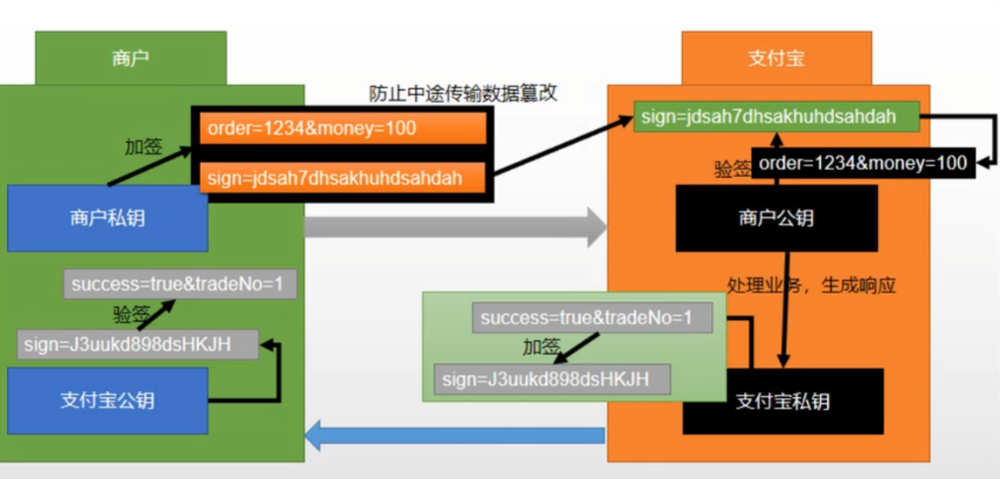

串接第三方支付
SpringBoot微服務項目筆記-22
商城支付
非對稱加密 RSA

- 加密跟解密是不同的鑰匙
- 我用私鑰加密，發給給你，你用公鑰解密，你不知道我的私鑰
- 加簽: 根據明文(例如: “我給小明100元”)用MD5生成一個簽名，如果明文任意字符修改，簽名就會天差地別(MD5特性)
- 驗簽: 確定 明文與簽名是否對應(明文是否被篡改)
NAT穿透
Network Address Translation Traversal
- 內部IP就是192.168.X.X開頭的那些，穿透技術就是讓外部可以透過公有IP訪問到你的內部IP
- 原理就是透過各種網路服務供應商幫你搭橋
- 使用場景:
- 開發測試，取得暫時的對外域名讓外部可以訪問本機
- 智慧家電連網，例如出門在外用手機網路可以看家裡監控那種
- 遠程控制，遠端桌面
- 以前玩Minecraft架server有用過類似的東西
支付沙盒
- 大部分的電子支付API都有提供一個sandbox做測試開發用
- 但是這個申請都要有店家資格，不好弄
- 我研究了一下這個EcPAY的 https://www.ecpay.com.tw/Service/API_Dwnld
- 大致使用流程就是申請帳號，然後下載支付網站提供的API與SDK，包到自己的專案之下，填上各種授權key，串接付款與跳轉的頁面這樣
支付串接流程
- PayWebController.java
- 這邊接收前端來的訂單號
@RequestParam("orderSn")，用訂單號去查詢訂單內容，然後帶著訂單內容往支付的API
- 這邊接收前端來的訂單號
@GetMapping(value = "/payOrder", produces = "text/html")
public String payOrder(@RequestParam("orderSn") String orderSn) throws AlipayApiException {
PayVo payVo = orderService.getOrderPay(orderSn);
String pay = alipayTemplate.pay(payVo);
System.out.println(pay);
return pay;
}
- AlipayTemplate.java
- 這個是由第三方提供的，台灣的我查了一下接近的有綠界的站內付2.0，但是他屬於高級會員才有的服務，API也沒有對外公開。只能說台灣在支付這塊真的落後很多，大部分是要自己寫一個前端頁面給顧客填付款資訊，把資訊串進第三方金流提供的SDK，生成付款的訂單訊息，就沒那麼方便
- 他這個Template都已經做好付款、退款、查詢等功能，只要填入自己支付的私鑰、公鑰、支付完要跳轉到的成功頁面，串上訂單號、金額、商品描述等等就能使用
- 用戶點支付，就從訂單跳轉到專屬生成的支付頁面(SDK直接生成的一個html頁面)，付完就回到成功頁面，串接真的是超簡單
- 並且只要支付成功，會發一個異步通知給商戶(一樣提前設定好
notify_url)，收到通知驗證一下簽名(用商戶的key)，就能從裡面取出支付的詳細內容，根據這個內容，在後台修改訂單狀態、保存交易的流水號等訊息，自此完成一個完整的支付
會員查詢訂單
他把會員的訂單歸到會員模組了
-
整理新建模組要幹的事:
- 引入thymeleaf、放頁面、放靜態檔案
- 設定網域與網關轉發
- 由於會員需要登入，設定登入攔截器、註冊WebMvcConfigurer
- 登入狀態存在session，所以還要導入spring-session與data-redis
- 其實應該用Spring Security的OA2做登入權限的統一管理會更好，否則這有些還要給feign調用放行特別寫規則還挺麻煩的
-
MemberWebController.java
@GetMapping(value = "/memberOrder.html")
public String memberOrderPage(@RequestParam(value = "pageNum", required = false, defaultValue = "0") Integer pageNum,
Model model) {
//查出當前登錄用戶的所有訂單列表數據
Map<String, Object> page = new HashMap<>();
page.put("page", pageNum.toString());
//遠程查詢訂單服務訂單數據
R orderInfo = orderFeignService.listWithItem(page);
System.out.println(JSON.toJSONString(orderInfo));
model.addAttribute("orders", orderInfo);
return "orderList";
}
- 因為請求是從member.mall.com發出去的，由於也需要帶著會員登入的cookie所以也用FeignConfig做了請求頭複製
- 查詢返回裡面包的是OrderEntity，因為member的thymeleaf渲染也要能訪問到這個bean，所以又要從order模組複製一份到member模組
- 老師這樣用其實很坑，一是貪方便要顯示訂單中的商品項，把OrderEntity魔改多了一個
List<OrderItemEntity>
// OrderEntity
@TableField(exist = false)
private List<OrderItemEntity> orderItemEntityList;
- 與其改Entity，反正都要跨模組傳，還不如抽出一個TO更規範
- 結果又會想把TO當成VO傳給前端，唉前後端不分離就是這樣討人厭，還不如都轉成JSON最統一
記踩坑
-
當遠程調用傳入的參數不是單純的String或Int，而是有一個map或list，此時必然是帶有RequestBody請求體的
@PostMapping -
所以被遠程調用的也必須是
@PostMapping，也可以用@RequestMapping -
thymeleaf返回字串而不是頁面的時候，看一下方法是不是
@ResponseBody，當用了@ResponseBody或@RestController就不會解析成html
上次修改於 2022-02-08